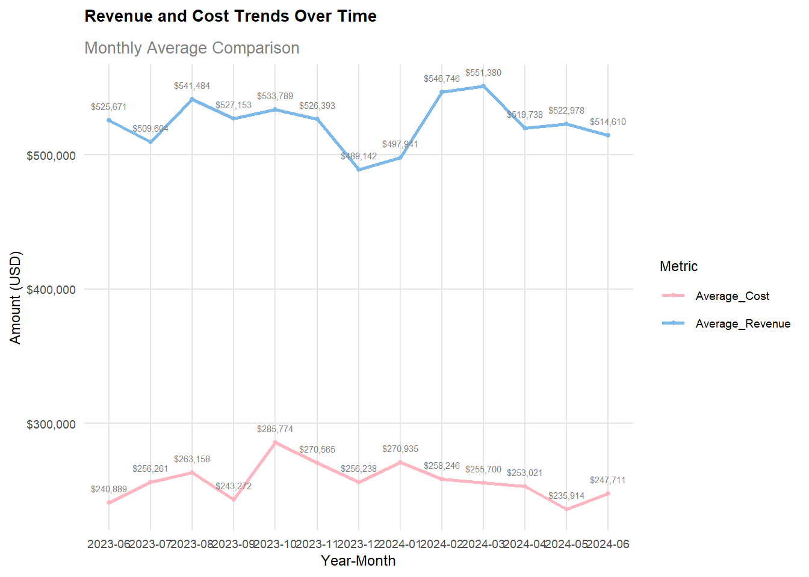
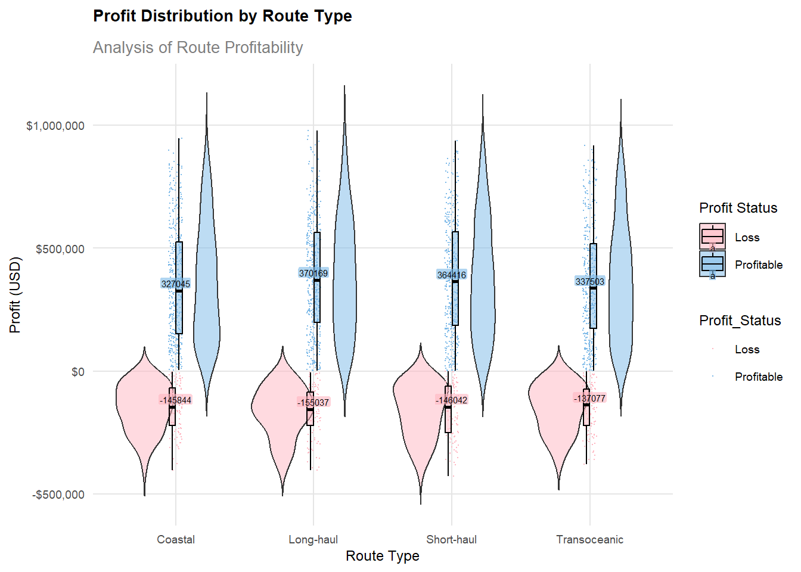
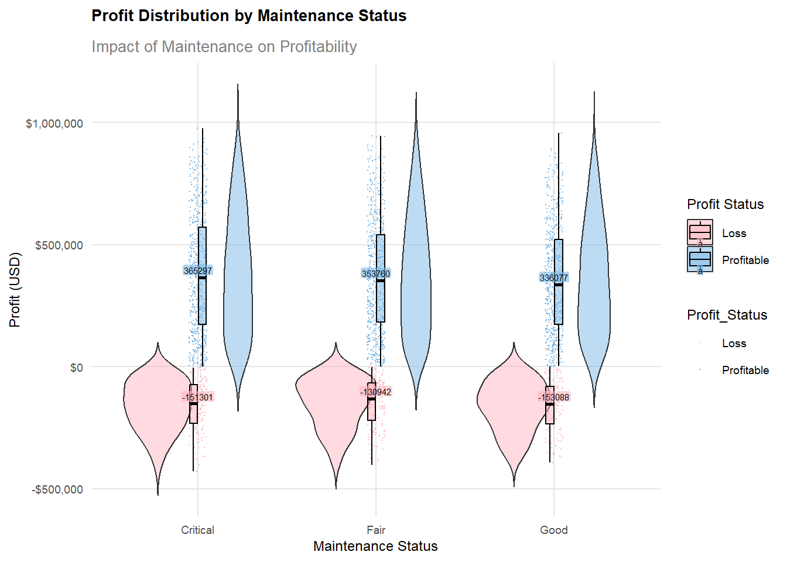

Show the code
pacman::p_load(ggplot2, tidyverse)
library(ggplot2)
library(dplyr)
library(scales)
library(ggridges)
library(patchwork)
library(tidyr)An international media company plans to publish an article on ship performance. My role as the Graphical Editor is to design insightful visualizations.
The Ship Performance Dataset contains maritime operational data from ships in the Gulf of Guinea. It consists of 2736 rows and 24 columns, capturing both numerical data (ship speed, engine power, travel distance, costs, revenue, efficiency) and categorical information (ship type, route type, engine type, maintenance status, weather conditions). The dataset is synthetic but designed to realistically represent typical maritime operations data. It’s available under a CC BY 4.0 license.
Use R (tidyverse + ggplot2) for data cleaning and visualization. Goal: Create 5-10 visualizations and write 150-word analyses for each.
First, install and load the required R packages.
pacman::p_load(ggplot2, tidyverse)
library(ggplot2)
library(dplyr)
library(scales)
library(ggridges)
library(patchwork)
library(tidyr)| Category | Package | Description |
|---|---|---|
| Data Manipulation | dplyr | Provides a set of functions for data manipulation, including filtering (filter()), selecting columns (select()), creating new variables (mutate()), and summarizing data (group_by() + summarize()). |
| tidyr | Helps reshape and clean data, offering functions like pivot_longer() and pivot_wider() for restructuring data, and separate() and unite() for splitting and merging columns. |
|
| Data Visualization | ggplot2 | One of the most powerful visualization packages in R, based on the “grammar of graphics” concept. It supports various chart types such as scatter plots, bar charts, line charts, and more. |
| ggridges | Extends ggplot2 to create ridge plots, which are useful for visualizing distributions across multiple categories. | |
| Visualization Enhancement | scales | Helps format scales in ggplot2, such as adjusting axis labels, customizing color mapping, and formatting dates/numbers. |
| Plot Layout Management | patchwork | Allows for the easy combination of multiple ggplot2 plots into a single layout, making comparative visualization easier. |
Use the following code to customize the theme, which will help reduce workload when beautifying charts later.
theme_custom <- theme_minimal() +
theme(
plot.title = element_text(size = 10, face = "bold", margin = margin(b = 10)),
plot.subtitle = element_text(size = 10, color = "grey50"),
axis.title = element_text(size = 9),
axis.text = element_text(size = 7),
legend.position = "right",
legend.title = element_text(size = 9),
legend.text = element_text(size = 7),
panel.grid.major = element_line(color = "grey90"),
panel.grid.minor = element_blank()
)
palette_main <- c("#7CB9E8", "#B8B8FF", "#FFE5B4", "#0077BE", "#6F00FF", "#FFD700")
palette_status <- c("Profitable" = "#7CB9E8", "Loss" = "#FFB6C1")Use read_csv to load the data.
ship_data <- read_csv("data/Ship_Performance_Dataset.csv")Use glimpse() to get an initial overview of the data.
glimpse(ship_data)Rows: 2,736
Columns: 18
$ Date <date> 2023-06-04, 2023-06-11, 2023-06-18, 2023-06-2…
$ Ship_Type <chr> "Container Ship", "Fish Carrier", "Container S…
$ Route_Type <chr> "None", "Short-haul", "Long-haul", "Transocean…
$ Engine_Type <chr> "Heavy Fuel Oil (HFO)", "Steam Turbine", "Dies…
$ Maintenance_Status <chr> "Critical", "Good", "Fair", "Fair", "Fair", "F…
$ Speed_Over_Ground_knots <dbl> 12.59756, 10.38758, 20.74975, 21.05510, 13.742…
$ Engine_Power_kW <dbl> 2062.9840, 1796.0574, 1648.5567, 915.2618, 108…
$ Distance_Traveled_nm <dbl> 1030.9436, 1060.4864, 658.8741, 1126.8225, 144…
$ Draft_meters <dbl> 14.132284, 14.653083, 7.199261, 11.789063, 9.7…
$ Weather_Condition <chr> "Moderate", "Rough", "Moderate", "Moderate", "…
$ Cargo_Weight_tons <dbl> 1959.0179, 162.3947, 178.0409, 1737.3853, 260.…
$ Operational_Cost_USD <dbl> 483832.35, 483388.00, 448543.40, 261349.61, 28…
$ Revenue_per_Voyage_USD <dbl> 292183.27, 883765.79, 394018.75, 87551.38, 676…
$ Turnaround_Time_hours <dbl> 25.86708, 63.24820, 49.41815, 22.40911, 64.158…
$ Efficiency_nm_per_kWh <dbl> 1.4551789, 0.2903614, 0.4995945, 0.7029057, 1.…
$ Seasonal_Impact_Score <dbl> 1.4156533, 0.8856478, 1.4058132, 1.3707043, 0.…
$ Weekly_Voyage_Count <dbl> 1, 6, 9, 1, 8, 7, 3, 6, 8, 2, 9, 4, 3, 7, 7, 3…
$ Average_Load_Percentage <dbl> 93.76925, 93.89537, 96.21824, 66.19370, 80.008…The dataset contains shipping operations data with 2,736 rows and 18 columns. It tracks various ship metrics including dates (from June 2023), vessel characteristics (ship types like Container Ships and Fish Carriers), and operational parameters (route types ranging from short-haul to transoceanic). The data includes technical specifications such as engine types (HFO, Steam Turbine, Diesel) and maintenance status.
Performance metrics are recorded through speed (in knots), engine power (kW), distance traveled (nautical miles), and draft (meters). Additional operational data covers weather conditions, cargo weight (tons), costs (USD), revenue per voyage, turnaround time (hours), and efficiency (nm/kWh). The dataset also tracks seasonal impact scores, weekly voyage counts, and average load percentages, providing a comprehensive view of maritime operations. Identify key variables (e.g., ship speed, fuel consumption, voyage distance).
Next, I will use the following code to check for missing values, duplicates, and outliers.
if (any(is.na(ship_data))) {
print("There are missing values in the data")
} else {
print("There are no missing values")
}[1] "There are no missing values"if (any(duplicated(ship_data))) {
print("There are duplicate values in the data")
} else {
print("There are no duplicate values")
}[1] "There are no duplicate values"numeric_columns <- ship_data %>% select(where(is.numeric)) %>% names()
z_scores <- ship_data %>% select(all_of(numeric_columns)) %>% scale() %>% as.data.frame()
outliers <- data.frame()
for (i in 1:length(numeric_columns)) {
column_name <- numeric_columns[i]
column_z_scores <- z_scores[, i]
outlier_indices <- which(abs(column_z_scores) > 3)
if (length(outlier_indices) > 0) {
outliers <- rbind(outliers,
data.frame(
Column = column_name,
Row_Index = outlier_indices,
Z_Score = column_z_scores[outlier_indices],
Value = ship_data[[column_name]][outlier_indices]
))
}
}
if (nrow(outliers) > 0) {
print("Outliers Detected:")
print(outliers %>% arrange(Column, desc(abs(Z_Score))) %>% group_by(Column) %>% slice_head(n = 5))
} else {
print("No Outliers Detected")
}[1] "No Outliers Detected"After checking, we found that the dataset has no missing values, duplicates, or outliers. However, from the previous step, we observed the presence of “None” in the dataset.
Therefore, we will further investigate the occurrences of “None.”
none_counts <- ship_data %>%
select(where(is.character)) %>%
summarise(across(everything(), ~ sum(. == "None", na.rm = TRUE))) %>%
pivot_longer(cols = everything(), names_to = "Variable", values_to = "Count") %>%
filter(Count > 0)
print(none_counts)# A tibble: 5 × 2
Variable Count
<chr> <int>
1 Ship_Type 136
2 Route_Type 136
3 Engine_Type 136
4 Maintenance_Status 136
5 Weather_Condition 136We found that 136 records contain "None" values in certain variables, suggesting that these might be misclassified ship data. Since the "None" values affect key variables, making these 136 records difficult to categorize, and correcting them is challenging, removing them can improve analytical accuracy.
Additionally, as only 136 records are affected, the overall dataset integrity remains largely intact. Therefore, in the subsequent data processing steps, we will directly filter out these 136 records.
Perform the following four data processing steps to achieve:
Remove rows containing "None": Clean the dataset by eliminating records that cannot be classified or have missing values.
Create time-related features and a profit variable: Extract year, month, and year-month information, and calculate the profit for each voyage.
Delete rows with missing values: Ensure that the dataset contains only complete records.
Add a profit status column and convert it to a factor: Determine whether a ship is profitable based on its profit value and convert the result into a factor type for easier analysis.
ship_data_clean <- ship_data %>%
filter(
!if_any(where(is.character), ~ . == "None")
) %>%
mutate(
Year = year(Date),
Month = month(Date),
YearMonth = format(Date, "%Y-%m"),
Profit_USD = Revenue_per_Voyage_USD - Operational_Cost_USD
) %>%
filter(complete.cases(.))
ship_data_clean <- ship_data_clean %>%
mutate(Profit_Status = ifelse(Profit_USD >= 0, "Profitable", "Loss")) %>%
mutate(Profit_Status = as.factor(Profit_Status))Based on the dataset, here are potential analysis directions:
Trend Analysis → Line Graph (Time Series Chart): Use a time series plot to visualize how the ship’s performance changes over time, helping to identify long-term trends or cyclical fluctuations.
Distribution Visualization → Histogram, Density Plot: These can be used to show the distribution of the data, helping to understand the central tendency and variability.
Category Comparison → Box Plot, Violin Plot: These plots allow for comparisons between different categories, highlighting differences in distributions or key metrics across groups.
Relationship Analysis → Scatter Plot with Regression Line: Use scatter plots to analyze relationships between two variables, helping to uncover potential correlations or trends.
Note: Since the data represents individual voyage records, for example, different types of ships might have varying frequencies in the dataset. It’s important to avoid assuming that the initial data quantities for each category (e.g., ship type) are the same. This is crucial to prevent Simpson’s Paradox from affecting the analysis.
We will first perform a quantitative distribution visualization analysis on the categorical variables in the dataset.
p1 <- ggplot(ship_data_clean, aes(x = Maintenance_Status)) +
geom_bar(fill = "#7CB9E8", color = "white") +
theme_custom +
labs(
title = "Maintenance Status Distribution",
x = "Maintenance Status",
y = "Count"
) +
geom_text(stat = 'count', aes(label = ..count..), vjust = 1.5, size = 2)
p2 <- ggplot(ship_data_clean, aes(x = Engine_Type)) +
geom_bar(fill = "#B8B8FF", color = "white") +
theme_custom +
labs(
title = "Engine Type Distribution",
x = "Engine Type",
y = "Count"
) +
geom_text(stat = 'count', aes(label = ..count..), vjust = 1.5, size = 2)
p3 <- ggplot(ship_data_clean, aes(x = Ship_Type)) +
geom_bar(fill = "#FFE5B4", color = "white") +
theme_custom +
labs(
title = "Ship Type Distribution",
x = "Ship Type",
y = "Count"
) +
geom_text(stat = 'count', aes(label = ..count..), vjust = 1.5, size = 2)
p4 <- ggplot(ship_data_clean, aes(x = Route_Type)) +
geom_bar(fill = "#0077BE", color = "white") +
theme_custom +
labs(
title = "Route Type Distribution",
x = "Route Type",
y = "Count"
) +
geom_text(stat = 'count', aes(label = ..count..), vjust = 1.5, size = 2)
p1 + p2 + p3 + p4 +
plot_layout(ncol = 2) The data reveals interesting patterns across maintenance status, engine types, ship types, and route types:
Maintenance Status shows an almost even distribution, with Critical (716), Fair (713), and Good (698) conditions having similar counts. This suggests consistent wear patterns across the fleet but also indicates that about one-third of vessels require urgent attention.
Engine Type distribution is also relatively balanced between Diesel (721), Heavy Fuel Oil (702), and Steam Turbine (704) engines, showing no strong preference for any particular propulsion technology.
Ship Type distribution is remarkably uniform across Bulk Carrier (550), Container Ship (524), Fish Carrier (521), and Tanker (532), indicating a well-diversified fleet composition.
Route Type shows some variation, with Long-haul (556) and Coastal (533) routes being more common, while Short-haul (513) and Transoceanic (518) routes are slightly less frequent. This suggests a focus on both regional and long-distance shipping operations.
First, let’s take a look at how income and cost change over time.
time_analysis <- ship_data_clean %>%
group_by(YearMonth) %>%
summarise(
Average_Revenue = mean(Revenue_per_Voyage_USD, na.rm = TRUE),
Average_Cost = mean(Operational_Cost_USD, na.rm = TRUE),
Voyage_Count = n()
) %>%
pivot_longer(cols = c(Average_Revenue, Average_Cost),
names_to = "Metric",
values_to = "Amount")
ggplot(time_analysis, aes(x = YearMonth, y = Amount, color = Metric, group = Metric)) +
geom_line(linewidth = 1) +
geom_point(size = 1) +
theme_custom +
scale_color_manual(values = c("Average_Revenue" = "#7CB9E8", "Average_Cost" = "#FFB6C1")) +
labs(
title = "Revenue and Cost Trends Over Time",
subtitle = "Monthly Average Comparison",
x = "Year-Month",
y = "Amount (USD)"
) +
scale_y_continuous(labels = scales::dollar_format()) +
geom_text(aes(label = scales::dollar(Amount),colour = "black"), vjust = -1.5, size = 2)
Revenue (blue line) has experienced significant fluctuations, with peaks around $551,000 in February-March 2024 and lows near $489,000 in December 2023. The overall trend shows a slight decline from early 2024 to June 2024. Costs (pink line) have remained relatively stable, ranging between $235,000-$285,000, with a notable spike in October 2023 at approximately $285,000.
The gap between revenue and costs (profit margin) was largest in February-March 2024 and smallest in December 2023, indicating varying business performance throughout the year. Despite fluctuations, both revenue and costs show a general stabilizing trend in the most recent months of 2024.
Next, let’s examine the time series variation of profit across different ship types.
ggplot(ship_data_clean %>%
group_by(YearMonth, Ship_Type) %>%
summarise(avg_profit = mean(Profit_USD), .groups = "drop"),
aes(x = YearMonth, y = avg_profit, color = Ship_Type, group = Ship_Type)) +
geom_line(size = 1) +
geom_point(size = 2) +
scale_color_manual(values = palette_main) +
theme_custom +
labs(
title = "Monthly Profit Trends by Ship Type",
subtitle = "Average Monthly Profit Performance",
x = "Year-Month",
y = "Average Profit (USD)"
) +
scale_y_continuous(labels = scales::dollar_format()) 
This line graph displays monthly profit trends for four different ship types from June 2023 to June 2024.
Bulk Carriers offer the highest profit potential but also the greatest risk, suggesting they’re best for risk-tolerant investors. Their dramatic swings ($150K to $400K) indicate high market sensitivity. Fish Carriers consistently perform around $250K-$300K, making them the most reliable choice for stable returns. After a collective downturn in late 2023, all ship types showed recovery in early 2024, indicating overall market improvement. Container Ships and Fish Carriers show opposing cycles, suggesting a potential diversification strategy to balance portfolio risks.
In this step, I will analyze profit to explore trends or patterns related to profit.
ggplot(ship_data_clean, aes(x = Ship_Type, y = Profit_USD, fill = Profit_Status)) +
geom_violin(aes(fill = Profit_Status),
adjust = 1.2,
trim = FALSE,
alpha = 0.5) +
geom_point(aes(x = Ship_Type, y = Profit_USD, colour = Profit_Status),
position = position_jitter(width = .05), size = 0.25, shape = 20) +
geom_boxplot(outlier.shape = NA, alpha = 0.5, width = 0.1, colour = "black") +
scale_fill_manual(values = palette_status) +
scale_color_manual(values = palette_status) +
theme_custom +
labs(
title = "Profit Distribution by Ship Type",
subtitle = "Box Plot showing Profit/Loss Ranges",
x = "Ship Type",
y = "Profit (USD)",
fill = "Profit Status"
) +
scale_y_continuous(labels = scales::dollar_format()) +
stat_summary(fun = median, geom = "label", aes(label = round(..y.., 0)),
vjust = -0.2, color = "black", size = 2,
label.padding = unit(0.1, "lines"),
alpha = 0.6,
label.size = 0)All ship types show both profitable (blue) and loss-making (pink) periods, with potential profits generally outweighing losses. The median profit (center line) is consistently around $300,000-$350,000 across all types.
Bulk Carriers show the widest profit distribution, indicating highest volatility. Container Ships have more concentrated profit ranges, suggesting more stable returns. Fish Carriers and Tankers show similar distribution patterns, with moderate volatility.
The loss distributions (pink) are generally smaller than profit distributions (blue), suggesting the shipping industry has better upside potential than downside risk across all vessel types.
The data suggests Container Ships might be the safest choice for risk-averse investors, while Bulk Carriers offer higher profit potential with greater risk.
ggplot(ship_data_clean, aes(x = Engine_Type, y = Profit_USD, fill = Profit_Status)) +
geom_violin(aes(fill = Profit_Status),
adjust = 1.2,
trim = FALSE,
alpha = 0.5) +
geom_point(aes(x = Engine_Type, y = Profit_USD, colour = Profit_Status),
position = position_jitter(width = .05), size = 0.25, shape = 20) +
geom_boxplot(outlier.shape = NA, alpha = 0.5, width = 0.1, colour = "black") +
scale_fill_manual(values = palette_status) +
scale_color_manual(values = palette_status) +
theme_custom +
labs(
title = "Profit Distribution by Engine Type",
subtitle = "Box Plot Analysis of Engine Performance",
x = "Engine Type",
y = "Profit (USD)",
fill = "Profit Status"
) +
scale_y_continuous(labels = scales::dollar_format()) +
stat_summary(fun = median, geom = "label", aes(label = round(..y.., 0)),
vjust = -0.2, color = "black", size = 2,
label.padding = unit(0.1, "lines"),
alpha = 0.6,
label.size = 0) All three engine types (Diesel, HFO, Steam Turbine) show remarkably similar profit distributions, with median profits around $320,000-$370,000.
All engine types have comparable profit potential, reaching up to $1,000,000. Loss risks are also similar, with maximum losses around -$500,000. The symmetrical distributions suggest balanced risk-reward ratios
Steam Turbine shows slightly higher median profits ($370,777). HFO engines demonstrate the most concentrated profit distribution. Diesel engines show marginally wider variation in profitable scenarios
The similar distributions suggest engine choice might be better based on factors like fuel costs and maintenance requirements rather than profit potential alone.
ggplot(ship_data_clean, aes(x = Route_Type, y = Profit_USD, fill = Profit_Status)) +
geom_violin(aes(fill = Profit_Status),
adjust = 1.2,
trim = FALSE,
alpha = 0.5) +
geom_point(aes(x = Route_Type, y = Profit_USD, colour = Profit_Status),
position = position_jitter(width = .05), size = 0.25, shape = 20) +
geom_boxplot(outlier.shape = NA, alpha = 0.5, width = 0.1, colour = "black") +
scale_fill_manual(values = palette_status) +
scale_color_manual(values = palette_status) +
theme_custom +
labs(
title = "Profit Distribution by Route Type",
subtitle = "Analysis of Route Profitability",
x = "Route Type",
y = "Profit (USD)",
fill = "Profit Status"
) +
scale_y_continuous(labels = scales::dollar_format()) +
stat_summary(fun = median, geom = "label", aes(label = round(..y.., 0)),
vjust = -0.2, color = "black", size = 2,
label.padding = unit(0.1, "lines"),
alpha = 0.6,
label.size = 0) Long-haul routes show highest median profits ($379,042). Transoceanic routes follow closely ($373,077). Coastal and Short-haul routes show slightly lower medians ($337,844 and $364,042).
All routes share similar maximum profit potential (around $1,000,000). Loss risks are comparable across routes (around -$500,000). Profit distributions are more concentrated in Long-haul and Transoceanic routes.
Long-haul routes offer best risk-adjusted returns. Coastal routes show widest profit variation, suggesting higher operational uncertainty. Short-haul routes demonstrate balanced risk-reward profile.
ggplot(ship_data_clean, aes(x = Maintenance_Status, y = Profit_USD, fill = Profit_Status)) +
geom_violin(aes(fill = Profit_Status),
adjust = 1.2,
trim = FALSE,
alpha = 0.5) +
geom_point(aes(x = Maintenance_Status, y = Profit_USD, colour = Profit_Status),
position = position_jitter(width = .05), size = 0.25, shape = 20) +
geom_boxplot(outlier.shape = NA, alpha = 0.5, width = 0.1, colour = "black") +
scale_fill_manual(values = palette_status) +
scale_color_manual(values = palette_status) +
theme_custom +
labs(
title = "Profit Distribution by Maintenance Status",
subtitle = "Impact of Maintenance on Profitability",
x = "Maintenance Status",
y = "Profit (USD)",
fill = "Profit Status"
) +
scale_y_continuous(labels = scales::dollar_format()) +
stat_summary(fun = median, geom = "label", aes(label = round(..y.., 0)),
vjust = -0.2, color = "black", size = 2,
label.padding = unit(0.1, "lines"),
alpha = 0.6,
label.size = 0) 
‘Good’ maintenance status shows lowest median profit ($336,322). ‘Critical’ maintenance shows highest median ($365,267). ‘Fair’ maintenance falls in between ($357,942).
Surprisingly, ships in critical maintenance condition show higher profit potential. This might suggest aggressive operational strategies with deferred maintenance. Could indicate a short-term profit vs. long-term sustainability trade-off.
All maintenance states show similar loss potentials (-$500,000). Profit distributions are more concentrated in ‘Good’ maintenance status. ‘Critical’ status shows wider profit variation, indicating higher operational uncertainty.
While critical maintenance status shows higher profits, this might not be sustainable long-term and could lead to increased future costs or safety risks.
Next, we will visualize the top 15 combinations with the highest profit in the dataset, further observing which combinations contribute the most to profit.
The following code is used to calculate the combination details:
top_combinations <- ship_data_clean %>%
filter(!is.na(Ship_Type), !is.na(Engine_Type), !is.na(Route_Type), !is.na(Maintenance_Status), !is.na(Profit_USD)) %>%
group_by(Ship_Type, Engine_Type, Route_Type, Maintenance_Status) %>%
summarise(mean_profit = mean(Profit_USD, na.rm = TRUE), .groups = "drop") %>%
arrange(desc(mean_profit)) %>%
head(15)
ggplot(top_combinations,
aes(y = reorder(paste(Ship_Type, Engine_Type, Route_Type, Maintenance_Status), mean_profit),
x = mean_profit,
fill = mean_profit)) +
geom_col() +
scale_fill_gradient(low = "#7CB9E8", high = "#FFB6CE") +
theme_custom +
labs(
title = "Top 15 Most Profitable Combinations",
subtitle = "Analysis of Ship, Engine, Route, and Maintenance Combinations",
y = "Combination",
x = "Average Profit (USD)",
fill = "Average Profit"
) +
scale_x_continuous(labels = scales::dollar_format())
top_combinations_freq <- top_combinations %>%
gather(key = "Variable", value = "Value", Ship_Type, Engine_Type, Route_Type, Maintenance_Status) %>%
count(Variable, Value) %>%
arrange(desc(n))This horizontal bar chart shows the top 15 most profitable combinations of ship, engine, route, and maintenance status.
Top Performers:
Tanker with HFO engine on short-haul routes with fair maintenance leads profitability ($480,000+)
Fish Carriers with HFO engines on long-haul routes rank second
Container Ships with Steam Turbines on long-haul routes rank third
Pattern Analysis:
HFO engines appear frequently in top combinations
Critical and Fair maintenance statuses dominate the top spots
Short-haul and Long-haul routes are more common in top performers
Key Combinations:
Fish Carriers show strong performance across different configurations
Container Ships appear in multiple top combinations
Fair maintenance status appears more often in highest-profit combinations
Next, we will explore the occurrences of these four categories in the top 15 profit-generating combinations. Since the data volumes for these four categories are not the same, we need to standardize the frequency counts.
top_combinations <- ship_data_clean %>%
filter(!is.na(Ship_Type), !is.na(Engine_Type), !is.na(Route_Type), !is.na(Maintenance_Status), !is.na(Profit_USD)) %>%
group_by(Ship_Type, Engine_Type, Route_Type, Maintenance_Status) %>%
summarise(
mean_profit = mean(Profit_USD, na.rm = TRUE),
freq = n(),
.groups = "drop"
) %>%
arrange(desc(mean_profit))
top_combinations <- top_combinations %>%
mutate(
freq_std = (freq - mean(top_combinations$freq)) / sd(top_combinations$freq)
)
top_15_after <- top_combinations %>%
arrange(desc(freq_std)) %>%
head(15)
top_combinations_freq_after <- top_15_after %>%
gather(key = "Variable", value = "Value", Ship_Type, Engine_Type, Route_Type, Maintenance_Status) %>%
group_by(Variable, Value) %>%
summarise(n = n(), .groups = "drop") %>%
ungroup()
top_combinations_freq_after <- top_combinations_freq_after %>%
mutate(n = case_when(
Variable == "Ship_Type" ~ top_15_after$freq_std[match(Value, top_15_after$Ship_Type)],
Variable == "Engine_Type" ~ top_15_after$freq_std[match(Value, top_15_after$Engine_Type)],
Variable == "Route_Type" ~ top_15_after$freq_std[match(Value, top_15_after$Route_Type)],
Variable == "Maintenance_Status" ~ top_15_after$freq_std[match(Value, top_15_after$Maintenance_Status)],
TRUE ~ NA_real_
))Next, we will visualize and compare the occurrences before and after standardization.
top_combinations_freq$type <- "Frequency"
top_combinations_freq_after$type <- "Standardized Frequency"
combined_data <- bind_rows(top_combinations_freq, top_combinations_freq_after)
p <- ggplot(combined_data, aes(x = reorder(Value, n), y = n, fill = n)) +
geom_col() +
facet_grid(type ~ Variable, scales = "free_x") +
scale_fill_gradient(low = "#7CB9E8", high = "#FFB6C1") +
theme_minimal() +
labs(
title = "Comparison of Frequency and Standardized Frequency in Top 15 Combinations",
x = "Element",
y = "Count",
fill = "Value"
) +
theme(
axis.text.x = element_text(angle = 45, hjust = 1),
strip.text = element_text(face = "bold")
) +
geom_text(aes(label = round(n, 2)), vjust = 1, size = 2)
print(p)Heavy Fuel Oil (HFO) engines show the highest frequency (7) among engine types, while Steam Turbine has a higher standardized frequency (2.97) compared to Diesel (1.81).
In maintenance status, Critical conditions have the highest frequency (8), though Good and Fair conditions show similar standardized frequencies (around 2.97 and 2.39 respectively).
Route types show balanced actual frequencies (3-4 occurrences each), with Transoceanic routes having a slightly higher standardized frequency (2.97) compared to Coastal routes (1.81).
For ship types, Container Ships and Fish Carriers both show high actual frequencies (5 each), and Fish Carriers maintain the highest standardized frequency (2.97) among all ship types.
The comparison between actual and standardized frequencies helps identify patterns that might not be immediately apparent from raw counts alone, particularly in highlighting the relative importance of different categories when normalized.
Next, we will perform a visual analysis of the operational efficiency of different types of ships.
ggplot(ship_data_clean, aes(x = Efficiency_nm_per_kWh, y = Profit_USD)) +
geom_density_2d_filled(alpha = 0.7) +
geom_smooth(color = "white", se = TRUE) +
facet_wrap(~Ship_Type) +
geom_hline(yintercept = 0, linetype = "dashed", color = "white") +
theme_custom +
labs(
title = "Efficiency vs Profit Density by Ship Type",
subtitle = "Relationship between Efficiency and Profitability",
x = "Efficiency (nm/kWh)",
y = "Profit (USD)"
) +
scale_y_continuous(labels = scales::dollar_format()) +
scale_fill_viridis_d()
The visualization shows the relationship between efficiency (nm/kWh) and profit (USD) across four ship types: Bulk Carrier, Container Ship, Fish Carrier, and Tanker.
All ship types show clear “sweet spots” (yellow/light green areas) where profit is maximized at specific efficiency levels, typically between 0.6-1.0 nm/kWh. Fish Carriers demonstrate the most distinct profit optimization patterns, with multiple high-profit zones across different efficiency levels, suggesting more operational flexibility. Container Ships and Tankers show more concentrated profit peaks around 0.8 nm/kWh, indicating a narrower optimal operating range.
The white lines (possibly representing average or trend lines) are relatively stable across efficiency ranges, suggesting that dramatic efficiency improvements may not always translate to proportional profit increases. Bulk Carriers show the most evenly distributed profit patterns, indicating they might be more resilient to efficiency variations.
In the vast expanse of the maritime industry, every vessel tells a unique story. Our deep dive into ship performance data reveals an intriguing truth: optimal solutions often lie in balance rather than in the pursuit of extremes.
Conventional wisdom suggests that higher efficiency invariably leads to better returns. However, our data tells a more nuanced story. Ships operate best within specific efficiency zones (0.6-1.0 nautical miles per kilowatt-hour), much like how cars perform optimally at certain speeds on a highway. Pushing beyond these zones often yields diminishing returns, challenging the “more is better” mindset that dominates many operational strategies.
Fish Carriers emerge as particularly fascinating examples of adaptability in this context. Their ability to maintain profitability across various efficiency ranges demonstrates that operational flexibility can be as valuable as peak performance. This insight transforms our understanding of maritime operations from a simple pursuit of maximum efficiency to a more sophisticated balancing act.
Think of different ship types as instruments in an orchestra, each playing its unique role in creating a harmonious performance. Bulk Carriers, with their high profit potential and volatility, act as the bold percussion section - capable of dramatic impact but requiring careful management. Container Ships provide the steady rhythm, offering more predictable returns that form the backbone of fleet operations. Fish Carriers and Tankers complete the ensemble, each contributing their distinct characteristics to create a well-rounded fleet performance.
This diversity isn’t just about risk management - it’s about creating a resilient system capable of adapting to changing market conditions. The data suggests that successful fleet operations rely not on maximizing the performance of any single vessel type, but on orchestrating a balanced combination that can weather various market conditions.
The relationship between routes and profitability reveals another layer of complexity in maritime operations. While long-haul and transoceanic routes show superior profit potential, coastal routes play an essential role in maintaining comprehensive market coverage. This distribution pattern suggests that successful route strategy isn’t simply about maximizing distance or profit per journey - it’s about weaving together a network that serves both immediate profitability and long-term market presence.
Perhaps the most thought-provoking finding emerges from our maintenance analysis. Ships in critical maintenance status counterintuitively show higher short-term profits, presenting operators with a complex dilemma. This correlation likely represents a temporary trade-off between immediate returns and long-term reliability, much like how deferring maintenance on any complex system might temporarily reduce costs but ultimately lead to more significant issues.
The similar profit distributions across engine types (Diesel, HFO, Steam Turbine) further complicate this picture, suggesting that maintenance decisions should prioritize long-term sustainability over short-term cost savings. This finding challenges fleet operators to think beyond quarterly profits and consider the broader implications of their maintenance strategies.
The maritime industry stands at a crossroads where traditional operational wisdom meets modern data-driven insights. Our analysis suggests that successful fleet operations require a delicate balance of efficiency, risk management, and long-term sustainability. The key lies not in pursuing extremes but in finding the sweet spots where various operational factors align optimally.
As we look ahead, the most successful operators will likely be those who can maintain this balance while adapting to new challenges. Whether it’s environmental regulations, changing market conditions, or technological advances, the ability to maintain operational flexibility while ensuring sustainable practices will become increasingly crucial.
This analysis not only provides insights into current maritime operations but also offers a framework for thinking about future challenges. In an industry as dynamic as maritime shipping, understanding these complex relationships between efficiency, profit, and sustainability isn’t just about optimizing current operations - it’s about preparing for the future of maritime commerce.